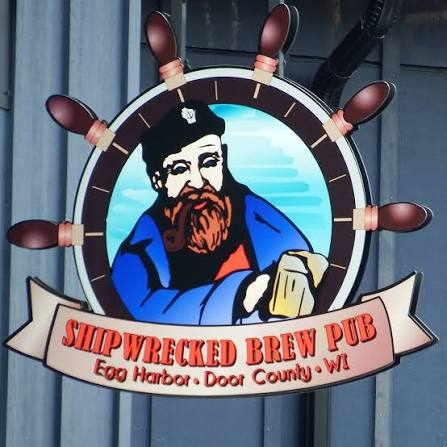
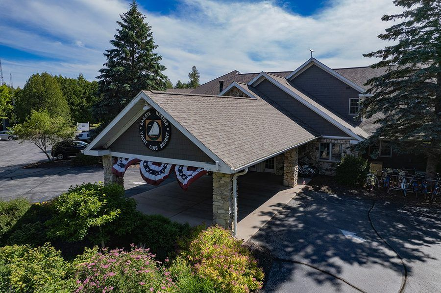
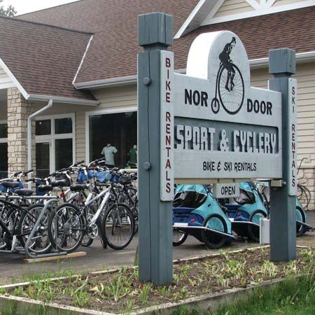
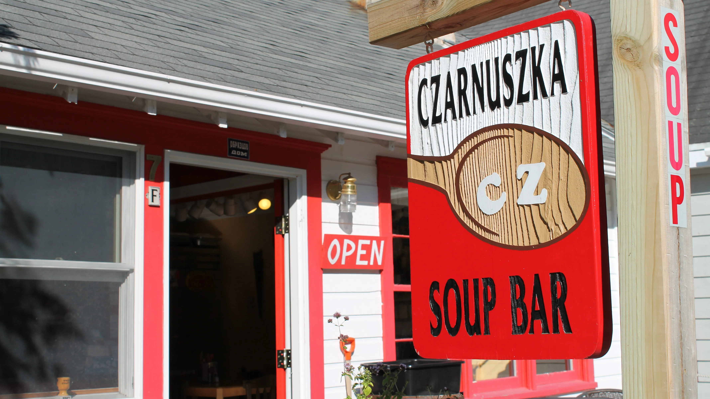
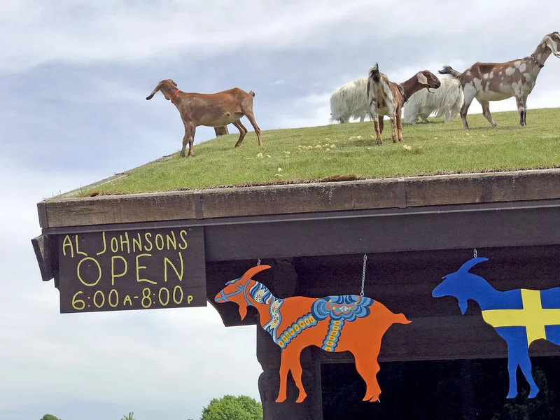
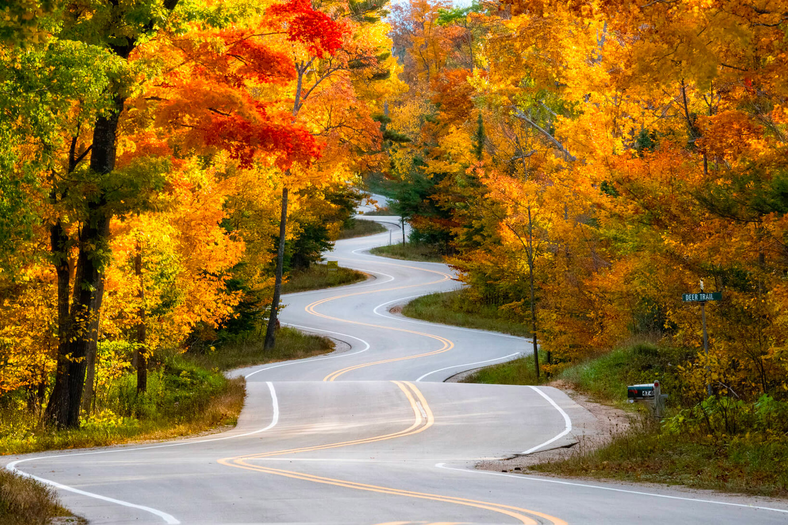

Popular Door County Communities
Sticking with the theme in my pages mentioning Door County, WI, it seems like these towns and villages are the most popular to visit amongst people who travel there. Here I have chosen what I think those to be and a picture of a restaurant, hotel, shop, or location that has significance to my family and I. Egg Harbor, we have the Shipwrecked Brew Pub that has been rebuilt recently after being burnt down. My dad loves to tell the story of when I fell and cracked my head open when I was 4, while we were waiting for a table. Baileys Harbor is our favorite town and we try to stay at the Baileys Harbor Yacht Club Resort if there is availability. Fish Creek, is a very touristy town, but it has the best biking trails and we tend to start our day from the Nor Door cycle shop before taking off on our rides. Emphraim is rather small but it once was home to the Czarnuzka Soup Bar which was pretty much the best soup of all time run by one guy who literally studied how to make all kinds of soup throughout Europe and became a god at it. Sadly it has since closed. Sister Bay, also quite touristy, but is home to Al Johnson's Swedish Restaurant which is famous for having goats on the roof. It is a fun place with great food. Lastly, Gills Rock is one of the most northern towns on the peninsula and is a port for ferrys to go to the islands off the coast. Driving through Gills Rock there is cool curvy road to drive through that looks awesome in autumn. Click the town names to see and I recommend visiting!





